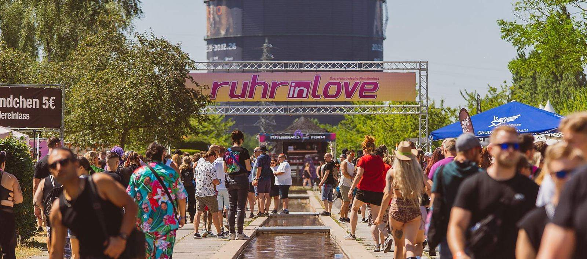

Festivals · Music
Ruhr in Love 2027
- Dates
- Venue
- OlgaPark, Oberhausen
- Location
- Oberhausen, Germany
- Format
- In-person
- Category
- Music
- Industry
- Electronic dance music festival
- Official website
- https://www.ruhr-in-love.de/
About
Dates are local to the host city (Central European Time, UTC+1 / UTC+2 in summer).
Topics: electronic music, techno, rave.
No organiser attendance figure found on the official pages fetched 24 Nov 2026. Ranked by our estimated size tier 'large' (30,000-100,000 attendees/visits), a judgement from format, venue and scale, not an official number.
Sources
- Official — https://www.ruhr-in-love.de/
Hotels
- Schlosshotel Hugenpoet — 5★ · August-Thyssen-Straße 51, 45219 Essen, Germany · 15.8 km from the venue · Price on request
- Hotel Oberhausen Neue Mitte affiliated by Meliá — 4★ · Centroallee 280, 46047 Oberhausen, Germany · 1.5 km from the venue · Price on request
- Parkhotel Oberhausen — 4★ · Teutoburger Straße 156, 46119 Oberhausen, Germany · 1.6 km from the venue · Price on request
- NH Oberhausen — 4★ · Düppelstraße 2, 46045 Oberhausen, Germany · 3.3 km from the venue · Price on request
- Hotel-Restaurant Haus Gimken — 4★ · Schloßstraße 182, 45355 Essen, Germany · 5.5 km from the venue · Price on request